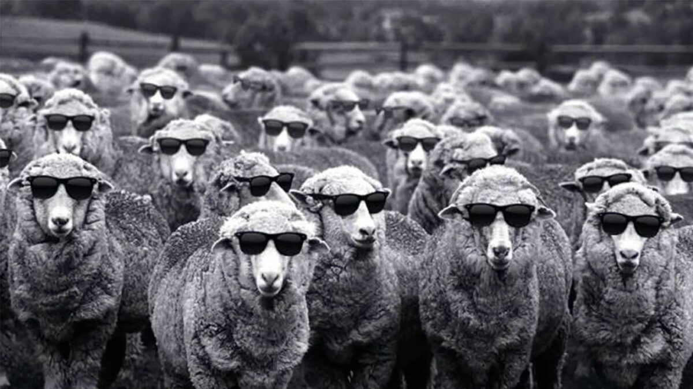

Julien
I'm an email and philosophy nerd
What I’m working on
I’m part of the team which is building Mailman - the email assistant for CEOs

Before founding Mailman, I was CEO of Dedicated.ai which let businesses get all of their employees to help with sales. We were backed by top investors including Village Global, the VC chaired by Reid Hoffman
Check out the Bitzscaling Podcast which I used to co-host
Work style
The team at Mailman moves fast by getting shit done, getting it done immediately and by working on things which might be huge

Consensus belief
I've come to believe - like everyone says - that what matters in life and at work is great people
Text which influenced me
On Reading and Books by Schopenhauer (link) is likely the text which influenced me most. It helped me adopt a more focused and thoughtful approach to learning, improving and working towards excellence

People I work with
These are some of the people I spend a lot of time with
Chris Yeh, Investor at Blitzscaling Ventures
"I have invested in Julien's businesses. He is a leader who gets things done faster than almost anyone" (Chris' profile)

Andrew Chignell, Professor at Princeton
"Julien teaches through the Princeton Project in Philosophy and Religion. Students at Princeton enjoy learning from him" (Andrew's profile)

The Honorable Thomas Mulcair
"Julien dropped out of college to work for me when he was 18. He is effective and uniquely creative" (Tom's profile)